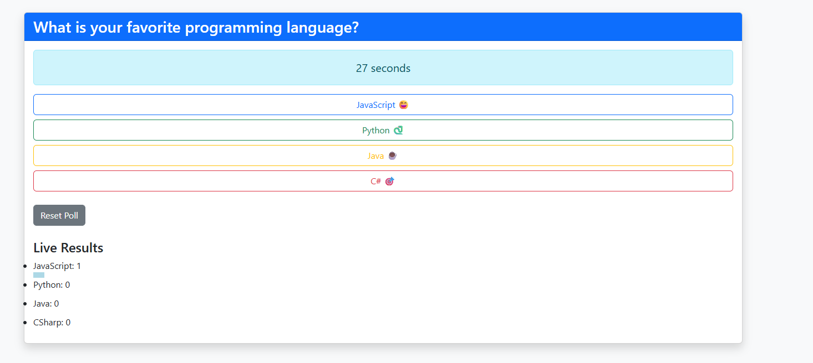
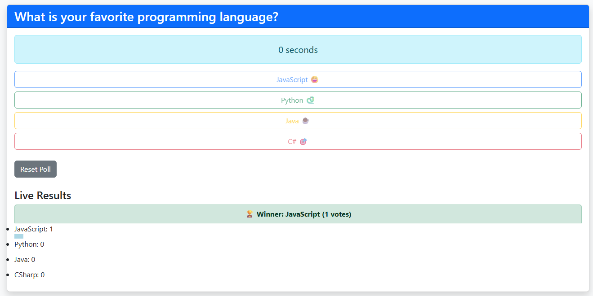

About the Project
The Live Voting System is a real-time web application built as a Scrum 4 team project for CIS 266. The system allows multiple users to vote on a question simultaneously, with results updating live for every connected user without any page refresh. It uses Socket.IO to establish a persistent WebSocket connection between the server and all clients.
The application features a 30-second countdown timer, live progress bars showing vote counts, automatic winner announcement when the timer ends, and a reset button to start a new poll. The system prevents votes from being cast after the timer expires and visually indicates when voting has closed.
Technologies Used
Key Features
- Real-time voting — all connected users see results update instantly via Socket.IO
- 30-second countdown timer that ends voting automatically when it reaches zero
- Live progress bars displaying vote counts for each option as votes come in
- Winner announcement displayed automatically when the timer expires
- Voting buttons disabled after timer ends to prevent late submissions
- Reset Poll button to clear votes and restart the timer for a new round
- Background changes color to indicate when voting has closed
Team Roles
Ethan Diaz
- Defined system architecture
- Managed event naming standards
- Ensured server/client integration
- Tested full system functionality
- Handled debugging and final merge
Malik Machaieie
- Built the Socket.IO server
- Implemented voting logic
- Created the countdown timer system
- Added winner calculation
- Managed real-time broadcasting
Ezra
- Built UI with HTML & Bootstrap
- Implemented Socket.IO client logic
- Handled vote submission
- Displayed live results and timer
- Managed UI updates and button states
Screenshots

Voting in progress — live results updating in real time

Timer ended — winner announced automatically
Demo Video
Sample Code
Server-side Socket.IO logic — voting, timer, and winner calculation (my contribution):
// index.js — Socket.IO Server (Malik's contribution)
let votes = { JavaScript: 0, Python: 0, Java: 0, CSharp: 0 };
let timeleft = 30;
let votingActive = true;
io.on('connection', (socket) => {
// Send current state to newly connected user
socket.emit('updateVote', votes);
io.emit('timer', timeleft);
io.emit('votingStatus', votingActive);
// Handle incoming vote
socket.on('vote', (choice) => {
if (!votingActive) return;
if (votes[choice] !== undefined) {
votes[choice]++;
}
io.emit('updateVote', votes); // broadcast to ALL users
});
// Handle poll reset
socket.on('reset', () => resetPoll());
});
// Countdown timer — runs every second
setInterval(() => {
if (!votingActive) return;
if (timeleft > 0) {
timeleft--;
io.emit('timer', timeleft);
}
if (timeleft === 0) {
votingActive = false;
const result = getWinner();
io.emit('votingStatus', votingActive);
io.emit('winner', result); // announce winner to all users
}
}, 1000);
// Calculate winner from current votes
function getWinner() {
let winner = "", max = -1;
for (let key in votes) {
if (votes[key] > max) {
max = votes[key];
winner = key;
}
}
return { winner, max };
}